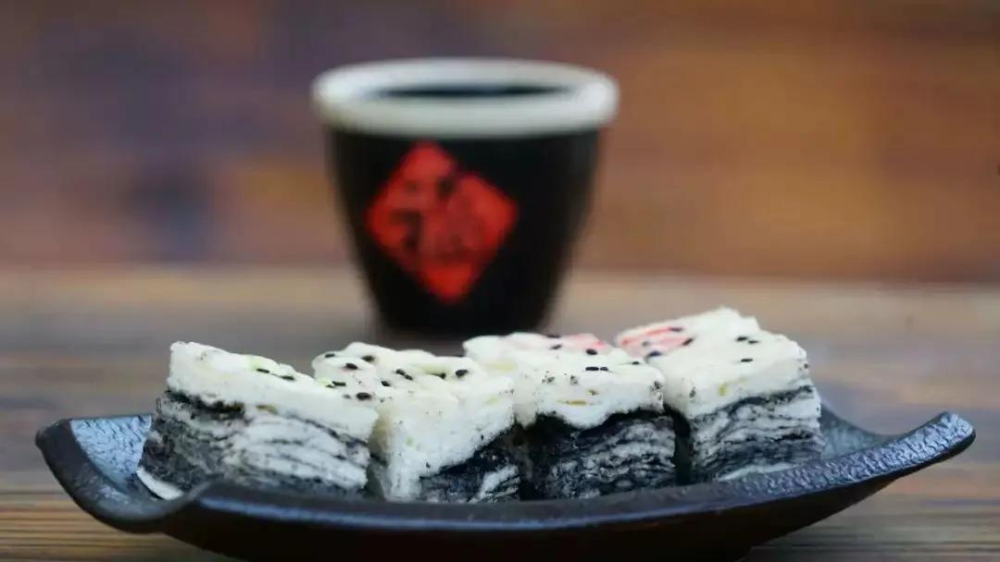
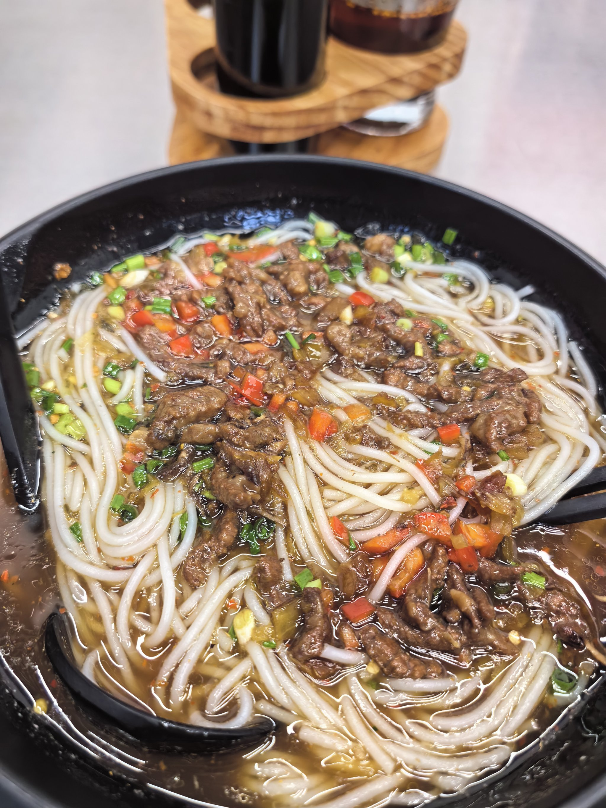

美食地图
品尝宜春特色美食，感受舌尖上的非遗文化
招牌特色
宜春扎粉
宜春扎粉因其"一扎入味"而得名，以大米为原料，口感软滑筋道，通常与爽口的卤汁搭配。
推荐店铺：老街扎粉

非遗美食
温汤发糕
温汤发糕是温汤镇的传统小吃，色泽金黄，蓬松暄软，吃时趁热，咸香可口。
推荐店铺：老温汤糕点铺

地方特产
丰城汤粉
丰城汤粉选用上等大米制作，汤汁由猪骨、鸡骨长时间熬制，配上特制辣椒酱，味道鲜美。
推荐店铺：丰城老字号
四季玩法
春季
明月山踏青，袁山公园赏花，温汤镇泡温泉，享受春意盎然的自然风光。
推荐时间：3月-5月夏季
明月山避暑，龙宫洞探秘，体验高山清凉和负氧离子的健康环境。
推荐时间：6月-8月秋季
袁山公园赏红叶，万载古城探访，丰收的季节感受江南秋色。
推荐时间：9月-11月冬季
温汤温泉养生，明月山看雪景，享受温暖与冰雪的完美结合。
推荐时间：12月-2月旅游小贴士
- 最佳旅游季节是春季和秋季，气候宜人，景色优美。
- 明月山景区游览建议提前购票，避免节假日高峰期。
- 温汤温泉建议携带泳衣，部分酒店可提供租赁服务。
- 宜春山区温差大，请携带适当衣物，注意防晒和保暖。